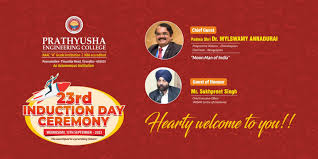

<!DOCTYPE html>
<html>
    <title>events</title>
    <link rel="icon" href="eventtitle.jpg">
</html>

<body bgcolor="black" style="color: white;">
    <center>
    <h1>UPCOMING EVENTS</h1>
    <h3>The Lot of Events In Our College</h3>
    </center>
    <hr>

    <center>
        <p>Prathyusha Engineering College, founded in 2001 by Shri .P. Raja Rao through the Prathyusha Educational Trust, began its journey with six initial courses. The establishment of the college was driven by Rao's role as Chairman of the Prathyusha Group of Companies, aiming to contribute to the field of engineering education. In 2012, the institution expanded its research capabilities by opening a new research and development center.</p>
        
        <h2>Welcomes You All</h2>
        <h3>Id card must | Formal Dress Code | Obey Rules And Regulations</h3>
    </center>

        <p>Prathyusha Engineering College (PEC) in Chennai is renowned for its vibrant campus life, hosting a variety of events that cater to both academic and extracurricular interests. Here's an overview of recent and upcoming events:
        PEC's annual cultural fest, Pravrithi, is a highlight of the campus calendar. Typically held in March, it showcases students' artistic talents through various on-stage events like light music, dance, and dramatics, as well as off-stage events such as vegetable carving, jewelry designing, and rangoli. The fest fosters a spirit of creativity and camaraderie among students. 

        For the most current information on events, it's advisable to visit PEC's official website or follow their social media channels</p>
    <center>
         <br>
        <a href="https://prathyusha.edu.in/">Login Official</a>
        <h2>Rules And Regulations</h2>
        <ol>
           <li>Formal Dress</li>
           <li>ID card Must</li>
           <li>Speak in English</li>
           <li>Obey The Staffs</li>
        </ol>
    </center>
    
      <p>Discipline and Behavior: Students are expected to exhibit discipline, dignity, obedience, and politeness both within and outside the campus. Any form of misconduct may lead to disciplinary action. 

        Dress Code: A formal dress code is enforced to promote professionalism. Students are required to adhere to the specified attire guidelines during college hours. </p>

     <hr>
     <center>
        <h1>Contact</h1>
        <h2>+91 1234567890 | eventstudio@gmail.com</h2>
        <h3>9th street avanue park trichy</h3>
     </center>
    </body>